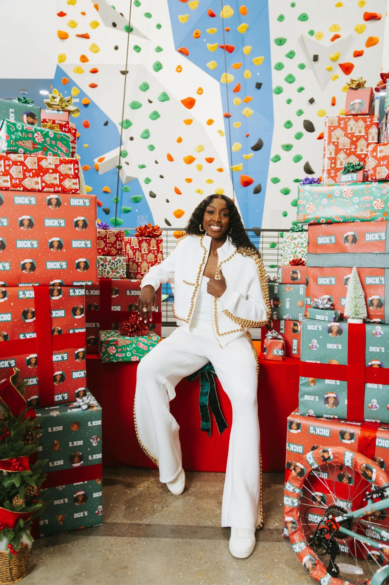

Denton, Texas / Dallas–Fort Worth
Production design
& art direction.

Selected campaign work
ENVSN Festival portraits · Black History 2023
Campus Remix / HBCU editorial
Credited as Travis Scott Cox.
About Scott
Scott Cox is a production designer and art-department professional based in the Dallas–Fort Worth area. His commercial production-design credits include work for DICK’S Sporting Goods and Foot Locker.
Production inquiries
scottcoxfilm@gmail.comInclude the role, production location,
and prep or shoot dates.